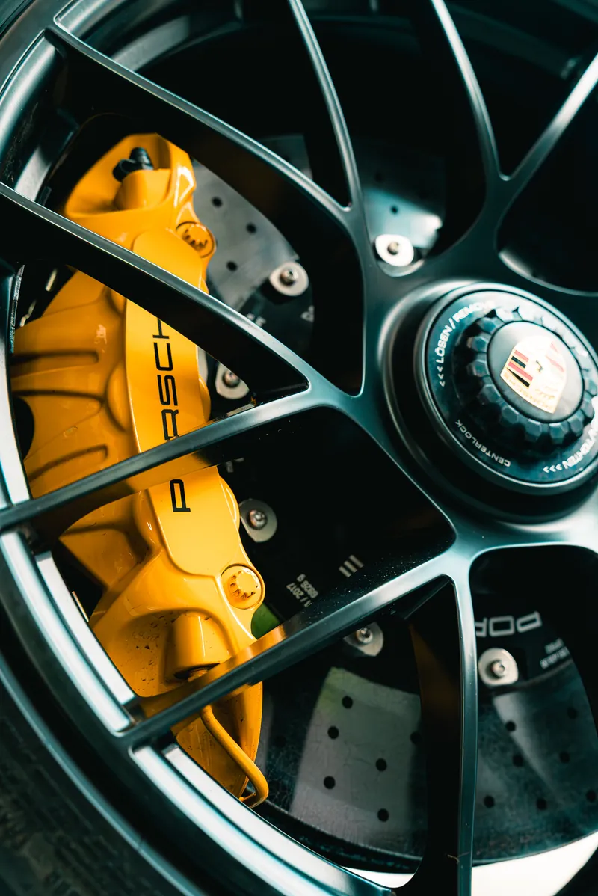
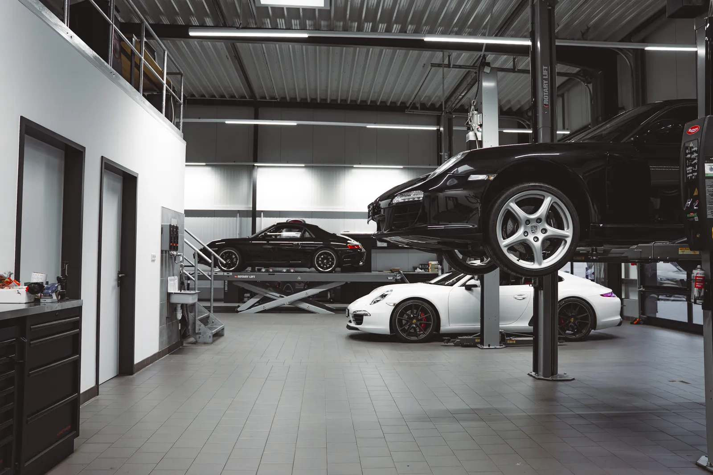

Jaguar
F-Type, XK und die sportlichen Limousinen: Wartung nach Jaguar-Vorgabe, Diagnose und Reparatur. Eine echte Alternative zur Vertragswerkstatt, die für viele Jaguar-Fahrer weit entfernt liegt.
Wartung nach Herstellervorgaben und Reparatur für Sportwagen und exklusive Fahrzeuge — luft- und wassergekühlt, von Jaguar und Maserati bis Mercedes-AMG und Audi RS.

Unser Schwerpunkt ist Porsche. Aber wer einen Elfer richtig warten kann, kann auch einen Jaguar F-Type oder einen Maserati richtig warten — wenn er sich an die Vorgaben des jeweiligen Herstellers hält. Genau das tun wir: Wartungsumfang und Intervalle nach Werksvorgabe, Teile in Erstausrüsterqualität, jede Arbeit dokumentiert.
Für die Herstellergarantie gilt dasselbe wie bei Porsche: Sie bleibt erhalten, wenn nach Vorgabe gewartet und nachweisbar dokumentiert wird. Bei freiwilligen Anschlussgarantien prüfen wir die Bedingungen vorab mit Ihnen.
Umfang und Intervall des jeweiligen Herstellers, mit Wartungsliste.
Eintrag ins Serviceheft, digital, wo der Hersteller es vorsieht.
Vor jeder Reparatur ein Kostenangebot. Keine Arbeit ohne Ihre Freigabe.
Eine Auswahl der Marken, die regelmäßig bei uns stehen. Ihre ist nicht dabei? Fragen Sie an — wir sagen Ihnen ehrlich, ob wir die richtige Werkstatt dafür sind.
F-Type, XK und die sportlichen Limousinen: Wartung nach Jaguar-Vorgabe, Diagnose und Reparatur. Eine echte Alternative zur Vertragswerkstatt, die für viele Jaguar-Fahrer weit entfernt liegt.
Ghibli, Quattroporte, GranTurismo und Levante. Wartung im vorgeschriebenen Umfang, Verschleißreparaturen und Fehlersuche — mit Kostenangebot vor jeder Arbeit.
AMG-Modelle aller Baureihen und die G-Klasse, vom aktuellen Modell bis zum Youngtimer. Service nach Mercedes-Vorgabe, Fahrwerk, Bremsen und Diagnose.
Wartung nach Audi-Vorgabe, Service am S-Tronic-Getriebe und die Kalibrierung der Assistenzsysteme nach Scheibentausch oder Fahrwerksarbeiten — für Audi auch im Konzern mit VW, Seat und Škoda.
Klein, laut und ernst gemeint. Wir behandeln einen Abarth mit derselben Sorgfalt wie einen Elfer: Wartung, Fahrwerk, Bremsen und Abgasanlage.
Unser Schwerpunkt: rund 80 Prozent der Fahrzeuge in der Werkstatt. Wartungspreise, Baureihen und Leistungen stehen auf einer eigenen Seite.
Vom regelmäßigen Service bis zur Abstimmung für die Rennstrecke. Die Preise der gängigen Arbeiten stehen bei den Werkstattleistungen.

Nach Herstellervorgabe, mit Flüssigkeiten und Ersatzteilen im Preis. Zusätzliche Arbeiten nach Fälligkeit, ausgeführt erst nach Freigabe.
Einbau und Abstimmung von Sportfahrwerken, Achsvermessung und die Abstimmung mit Radlastwaage, bei der jedes Rad einzeln gewogen wird.
Radwechsel mit Sichtprüfung, Einlagerung und Zentralverschlussfelgen mit dem vorgeschriebenen Werkzeug und Drehmoment.
Fehlersuche an Motor, Getriebe und Elektronik, Verschleißreparaturen an Bremse, Kupplung und Abgasanlage. Mit Kostenangebot vorab.
Unfallinstandsetzung nach Herstellervorgaben, Dellen ohne Lackieren, Felgeninstandsetzung und Aufbereitung innen und außen.
Die Prüforganisation kommt dreimal pro Woche zu uns. Mängel beheben wir direkt, ohne zweiten Termin.
Sie sind im Urlaub oder auf Geschäftsreise? Wir holen Ihr Fahrzeug ab und bringen es gewartet zurück.
Wenn Sie in der Zwischenzeit mobil bleiben müssen, steht ein Wagen bereit.
Lieber weniger Fahrzeuge zur selben Zeit und jedes richtig.
Ja. Die Herstellergarantie bleibt erhalten, wenn die Wartung nach Herstellervorgaben ausgeführt und dokumentiert wird. Bei freiwilligen Anschlussgarantien gelten die Bedingungen des Garantiegebers — die prüfen wir vorab mit Ihnen.
Schwerpunkt ist Porsche. Daneben betreuen wir regelmäßig Jaguar, Maserati, Mercedes-AMG und die G-Klasse, Audi RS und S sowie Abarth. Für andere Marken fragen Sie bitte an.
Die kleine Wartung beginnt bei 499 €, die große bei 699 €, jeweils inklusive Flüssigkeiten und Ersatzteile. Der genaue Preis hängt von Marke, Modell und Fälligkeit ab. Sie erhalten ihn vor dem Termin.
Sagen Sie uns, um welches Fahrzeug es geht und was ansteht. Wir nennen Ihnen den Preis vorab und holen Ihr Fahrzeug auf Wunsch ab.
Grasser Cars · Sales · ServicesSportwagenservice in Bayern, für Kundinnen und Kunden aus Nürnberg, Fürth, Zirndorf, Oberasbach, Cadolzburg, Stein, Schwabach und Ansbach.